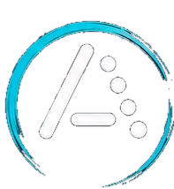

The Koch method
Start at full speed with two characters and add one at a time. You learn rhythm and sound, never dots-and-dashes on paper.

Another Morse Trainer Get Started· − Koch method · 33 WPM
Train your ear using modern methods inspired by real-world CW operation. No lookup tables, no rote charts — just listen, recognize, and get faster.
Learn Morse. Hear Progress.
Everything here exists to make you a faster, more confident operator — not to pass a quiz.
Start at full speed with two characters and add one at a time. You learn rhythm and sound, never dots-and-dashes on paper.
Every answer is timed from the last tone. The app knows not just whether you got it — but how fast — and drills what's still slow.
It quietly learns the pairs you actually mix up (B/D, U/V, S/H…) and builds targeted sessions to sort them out.
Keep characters at full speed while stretching the gaps. Adjustable tone and effective WPM let you ramp up comfortably.
Passive practice for the car or a walk: code plays, then the answer is spoken aloud — with full background audio and lock-screen controls.
Per-character accuracy, median recognition time, and your most-confused pairs — weakest first, so you always know what to work on.
A staged ladder takes you from single letters to pairs, words, and call signs. Each character graduates only when you can copy it reliably and quickly.
Pick a style at the start of every session and practice on a timer, or go until you stop.
The Koch ladder — single letters, numbers, and symbols.
Common words and call signs copied as whole sounds.
CW shorthand and Q-codes — what are they actually saying?
Run-together patterns like <AR> and <SK>.
Hold a whole word in your head, then self-grade the recall.
Free recall — hear it, type it, no multiple choice.
Targeted reps on the exact pairs you keep mixing up.
Hands-free, eyes-free practice with spoken answers.
Work a simulated POTA contact and log the exchange.
Another Morse Trainer is a free, open-source app for iPhone. It was built the way a CW operator actually learns — by ear, at speed, focusing relentlessly on what you get wrong. Made for real copy. Made to help you learn.